Ujaval Gandhi
Ujaval GandhiErstellung einer Karte zur Landnutzung (QGIS3)¶
Zonierungen definieren und regulieren die Art und Weise der Landnutzung auf einzelnen Grundstücken, deren Grenzen, die Entwicklungsanforderungen und -richtlinien. In diesem Tutorial werden wir lernen, wie wir an Grundstücks-Datensätze kommen und sie entsprechend der Zonierungs-Attribute in einer Karte darstellen.
Anmerkung des Übersetzers: Die im angelsächsischen Sprachraum gebräuchliche Zonierung entspricht im Deutschen etwa einem Flächennutzungs- bzw. Bebauungsplan.
Überblick über die Aufgabe¶
Wir werden mit einem Datensatz von Grundstücken arbeiten, der Zonierungs-Informationen enthält und eine Karte erstellen, welche die Zonierungs-Muster der Innenstadt von Kapstadt darstellt.

Weitere Fähigkeiten, die wir erlernen:¶
Zugang zu und Download von Daten über die ArcGIS REST-Schnittstelle in QGIS
Ausschneiden von Objekten aus einem Layer, der einen Begrenzungs-Layer überlappt
Verschmelzen verschiedener Unter-Kategorien
Beschaffung der Daten¶
Die für dieses Tutorial geeigneten Daten sind im Cape Town Open Data Portal verfügbar. Aus diesem Portal werden wir die Daten mithilfe der REST-Schnittstelle von ArcGIS importieren und drei im Folgenden beschriebene Layer erzeugen.
Zonierungs-Layer: ein Polygon-Shapefile mit einem Zonierungs-Code und einer Beschreibung der Grundstücke mit je einer eigenen Zonierung - zugeschnitten auf die Innenstadt von Kapstadt
Teil-Zonierungs-Layer: ein Polgon-Shapefile mit einem Zonierungs-Code und einer Beschreibung der Grundstücke mit Mehrfach-Zonierung, bei dem jedes Polygon in einzelne zonierte Polygone aufgeteilt wird
Innenstadt von Kapstadt: ein Polygon, das die Grenzen des Innenstadtbereichs von Kapstadt markiert
Wir wollen den Datensatz für dieses Tutorial schrittweise erzeugen.
Wir gehen zum Daten-Portal und suchen nach den Innenstadt-Daten von Kapstadt (
Cape Town CBD data) in der Suchleiste und starten die Suche.
Wir benutzen den Button Vollständige Details anzeigen, um die Daten zu laden.

Ggf. müssen wir nach unten scrollen, um Datenquelle anzeigen zu finden; wir klicken darauf.

Im Verzeichnis der ArcGIS REST Services wählen wir Home und kopieren die URL dieser Seite; diese sollte etwa diese Form haben: https://citymaps.capetown.gov.za/agsext1/rest/services.

Nun öffnen wir QGIS und wählen .

Die Liste der möglichen Datenquellen befindet sich im linken Teil des Dialogs. Wir scrollen nach unten, bis angezeigt wird, wählen dies aus und klicken auf Neu, um eine neue Server-Verbindung zu erstellen.

Unter Verbindungsdetails vergeben wir als Name
Cape Town Open Data Portalund fügen die kopierte URL als Quelle unter URL ein.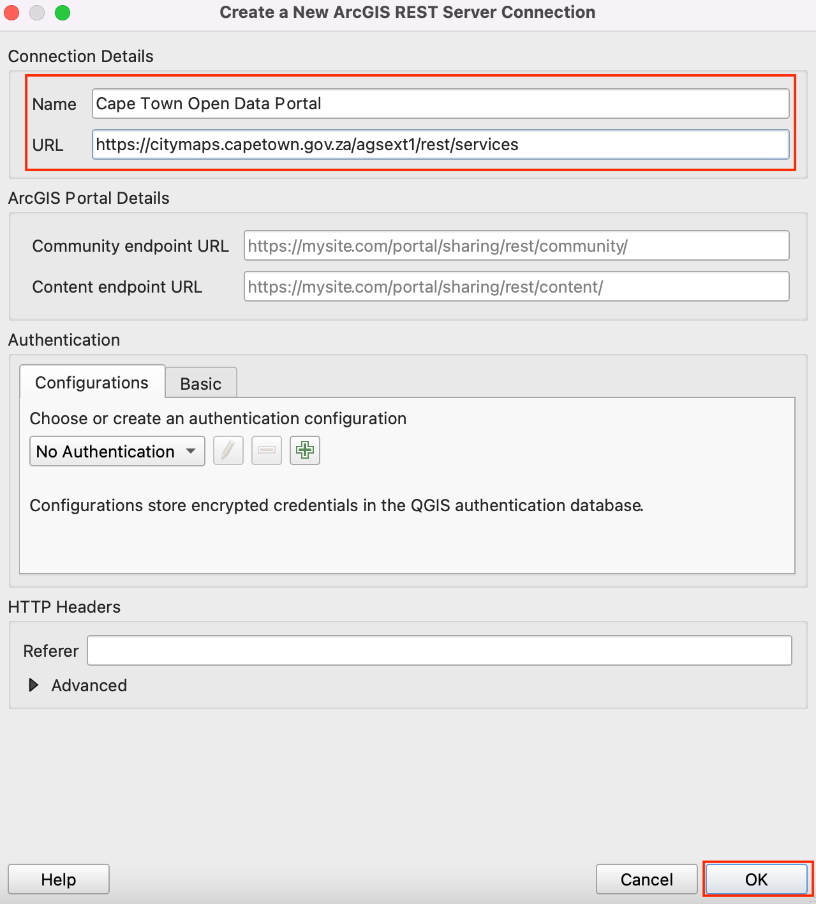Wir bestätigen mit OK und wählen dann Verbinden, um die auf dem Server verfügbaren Datenquellen anzuzeigen.

Nun suchen wir in der Datenbank nach den drei Layern, die wir für das Tutorial benötigen. Zuerst öffnen wir den Layer
Cape Town CBDin QGIS. Dazu erweitern wir die Ordner-Struktur. Der vollständige Pfad ist . Wir wählen den Layer und dann den Button Hinzufügen.
Wir schließen die , um den Layer in QGIS zu betrachten. Mit der rechten Maustaste rufen wir das Kontextmenü auf und wählen , um ihn im Arbeitsbereich zu zentrieren.

Wir werden nun den Layer
Zonierungmithilfe der Datenquellenverwaltung hinzufügen. Wir verbinden uns zumCape Town Open Data Portalund navigieren zum LayerZoning; der vollständige Pfad ist . Der Layer ist sehr groß, so dass wir die Option Nur sich mit aktueller Ansicht überschneidende Objekte abfragen wählen sollten. Ohne diese Option dauert das Laden sehr lange. Wir klicken Hinzufügen, um den Layer in QGIS zu öffnen.
In gleicher Weise fügen wir den Teil-Zonierungs-Layer hinzu. Der vollständige Pfad ist Theme_Based –> Land_Parcel_Zoning –> Split Zoning.

Nun sind alle drei Layer in QGIS geöffnet. Wir wollen die Layer
ZoningundSplit Zoningmit dem Begrenzungs-LayerCape Town CBDverschneiden. Zunächst sollten wir alle drei Layer lokal als Shapefiles speichern. Nach einem Rechtsklick auf den LayerCape Town CBDund der Auswahl Export wählen wir Objekte speicher als.
Wir stellen als Format ESRI Shapefile ein und navigieren zu einem lokalen Ordner, in dem wir die Shapefiles abspeichern werden. Als Namen vergeben wir
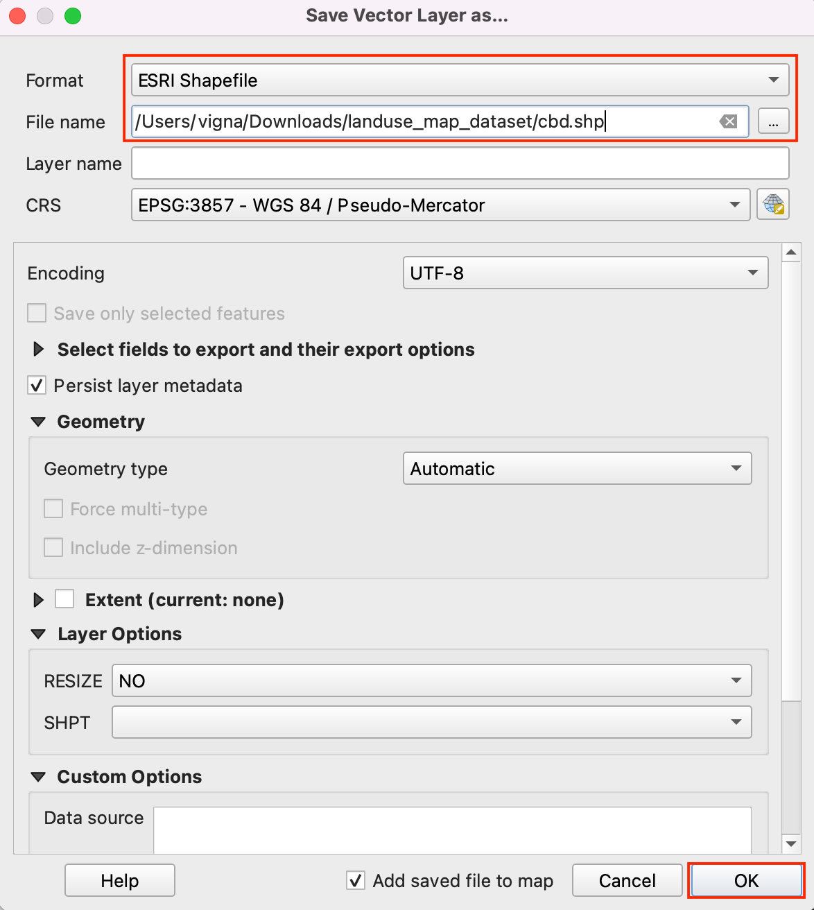cbdund klicken OK. Genauso verfahren wir mit den übrigen Layern und speichern sie alsZoningundSplit Zoningim selben Ordner.Die vom Server geladenen Layer können nun entfernt werden. Dazu wählen wir alle drei Layer aus und wählen per Rechtskklick aus dem Kontextmenü Layer löschen …. Wir wollen nun die Objekte aus den Layern
ZoningundSplit Zoningausschneiden, die sich mit dem Layercbdüberschneiden.
Wir wählen aus dem Menü.

In den Verarbeitungswerkzeugen suchen wir nach Verschneidung und öffnen das Werkzeug per Doppelklick.

Wir wählen
Zoningals Eingabelayer und für Layer überlagerncbd. Bei den übrigen Optionen belassen wir die voreingestellten Werte und fahren damit fort, das Ergebnis als Datei abzuspeichern.
Im Eingabefeld Verschneidung tragen wir
zoning_cbdals Namen für den temporären Layer ein und klicken den Button Starte.
Abhängig von den Einstellungen zur Verarbeitung werden unterschiedliche Fehler oder Warnungen im Protokoll-Bereich angezeigt. Der Eingabelayer weist einige ungültige Geometrien auf und wird daher bei der Verschneidung nicht verarbeitet. Wir werden diese Geometrien in den Layern
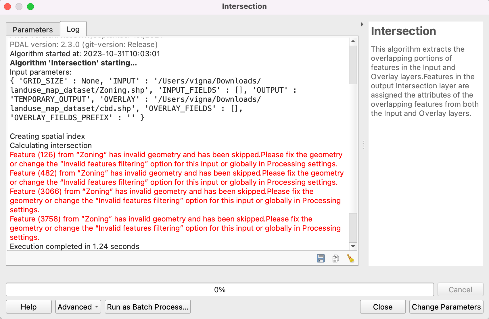ZoningundSplit Zoningzunächst reparieren, bevor wird die Verschneidungen ausführen können.Eine etwaig erstellte Ausgabe kann sowohl aus QGIS als auch aus dem Dateisystem wieder entfernt werden. Wir suchen in den Verarbeitungswerkzeugen nach und öffnen das Werkzeug per Doppelklick.

Wir wählen
Zoningals Eingabelayer. Alle anderen Optionen belassen wir bei den Voreinstellungen und speichern den Ausgabe-Layer alszoning_fixed.shpim Dateisystem, indem wir den Button … rechts neben Geometrien reparieren klicken und In Datei speichern… wählen. Wir klicken den Button Starte. Die Verarbeitung wiederholen wir für den LayerSplit Zoningund speichern die Ausgabe mit den reparierten Geometrien untersplit_zoning_fixed.shp.
Die Layer
ZoningundSplit Zoningkönnen entfernt werden. Nun können wir die Layerzoning_fixedundsplit_zoning_fixedmit dem Layercbdverschneiden. Wir wählen erneut das Werkzeug aus den Verarbeitungswerkzeugen und starten es per Doppelklick.
Wir wählen zoning_fixed als Eingabelayer und cbd unter Layer überlagern, um die Verschneidung wie oben beschrieben auszuführen. Die Ausgabe speichern wir als zoning_cbd und wiederholen die Prozedur für den Layer split_zoning_fixed; diese Ausgabe speichern wir als split_zoning_cbd.

Der Einfachheit halber können wir eine Kopie aller drei vorverarbeiteten Layer unter folgenden Links herunterladen:
Arbeitsablauf¶
Die folgenden Schritte sind nur erforderlich, wenn mit einem neuen Projekt gestartet wird. Dazu starten wir QGIS und klicken , um mit den für das Tutorial erforderlichen Layern arbeiten zu können.
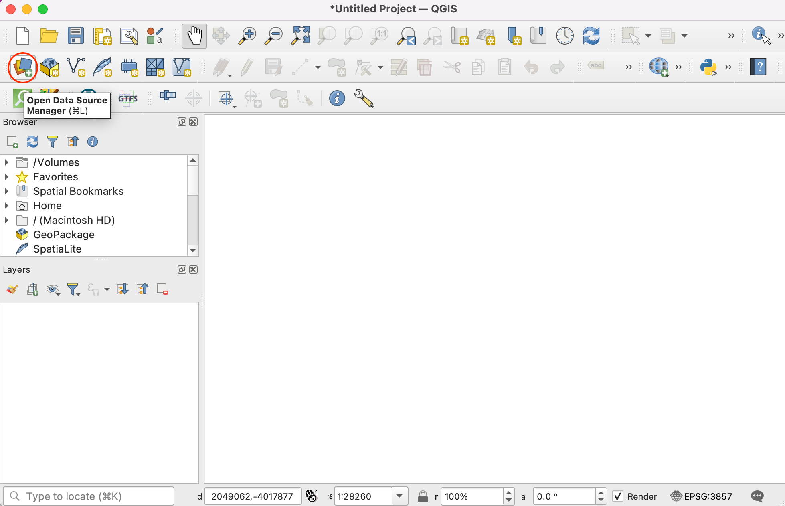
Wir wechseln in den Vektor-Bereich und verwenden den Navigations-Button, um den Ordner zu öffnen, in dem die Shapefiles abgelegt wurden.
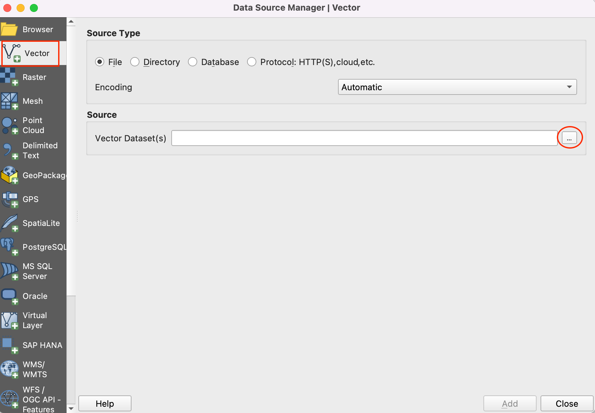
Wir wählen die Dateien
cbd.shp,zoning_cbd.shpundsplit_zoning_cbd.shpund klicken Öffnen.

Alle ausgewählten Dateien werden in der Textbox neben dem Bezeichner Vektordatensätze angezeigt. Wir klicken Hinzufügen und danach Schließen.

Wir sollten hin und wieder unsere Arbeit speichern. Dazu wählen wir .

Wir speichern das Projekt in einem Arbeitsverzeichnis als
landuse_map.qgz. Die Projektdatei in QGIS enthält Referenzen auf die Daten-Layer und speichert außerdem Styles, Karten-Vorlagen usw.

Wir wählen erst den Layer
zoning_cbdund dann Attributtabelle öffnen aus dem Menü . Hier ist wichtig, dass das AttributINT_ZONE_Cdie Zonierungscodes enthält und das AttributINT_ZONE_Ddie Beschreibung der Zonierung. die Attributtabelle können wir wieder schließen.

Wir wollen nun den Stil der Layer unter Nutzung dieser Attribute anpassen, so dass Grundstücke mit demselben Zonierungscode in derselben Farbe dargestellt werden. Dazu klicken wir auf den Button Layergestaltungsfenster öffnen im Layer-Panel und im jetzt geöffneten Fenster den Dropdown-Button bei Einzelsymbol.

Wir wählen Kategorisiert aus. Als Wert wählen wir
INT_ZONE_C, anschließend klicken wir Klassifizieren.
Eine Reihe von Symbolen wird angezeigt. Jedem einzelnen Code wird eine eigene Farbe zugeordnet.

Zu beachten ist, dass jede Kategorie der Zonierung Unterkategorien enthält. Die Kategorie
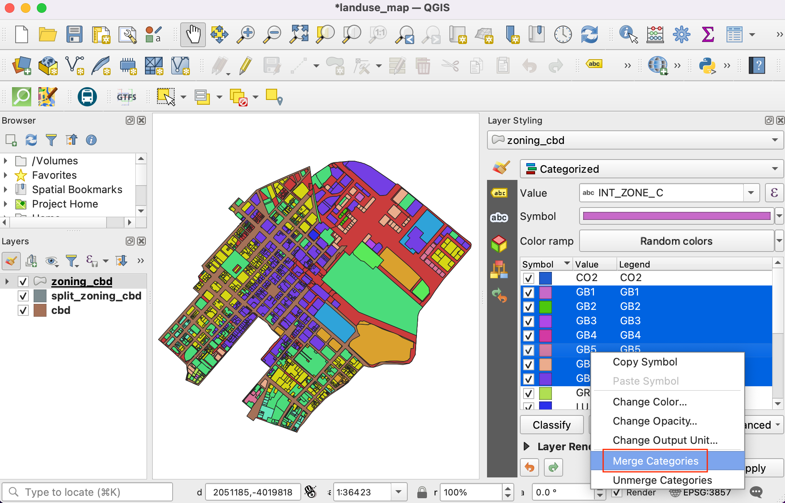General Business (GB)hat die Unterkategorien `` GB1``,GB2usw. Für die Zielkarte können wir alle Unterkategorien zu einer übergeordneten Kategorie zusammenfassen. Dazu wählen wir alle Unterkategorien mit gedrückter Shift-Taste aus und wählen per Rechtsklick im Kontextmenü Kategorien verschmelzen.Dies wiederholen wir für die Kategorien
MUundTR. Nach dem Zusammenfassen können wir die Beschriftung in der Legende ändern, um eine bessere Beschreibung anzuzeigen. Wir klicken doppelt auf einen Wert in der Spalte Legende, um die Kategorie unzubenennen.
Wir geben für jede Kategorie eine Beschriftung entsprechend dem Wert in der Spalte
INR_ZONE_D. Solbald die Beschriftungen eingegeben wurden, wird auch die Legende im Layer-Panel aktualisiert.
Wir können nun die Farben und Symbole für jede Kategorie anpassen. Wir müssen dafür auf das Symbol der Kategorie doppelt klicken.

Wir können die Füllfarbe und die Strichfarbe unserer Wahl zuweisen.
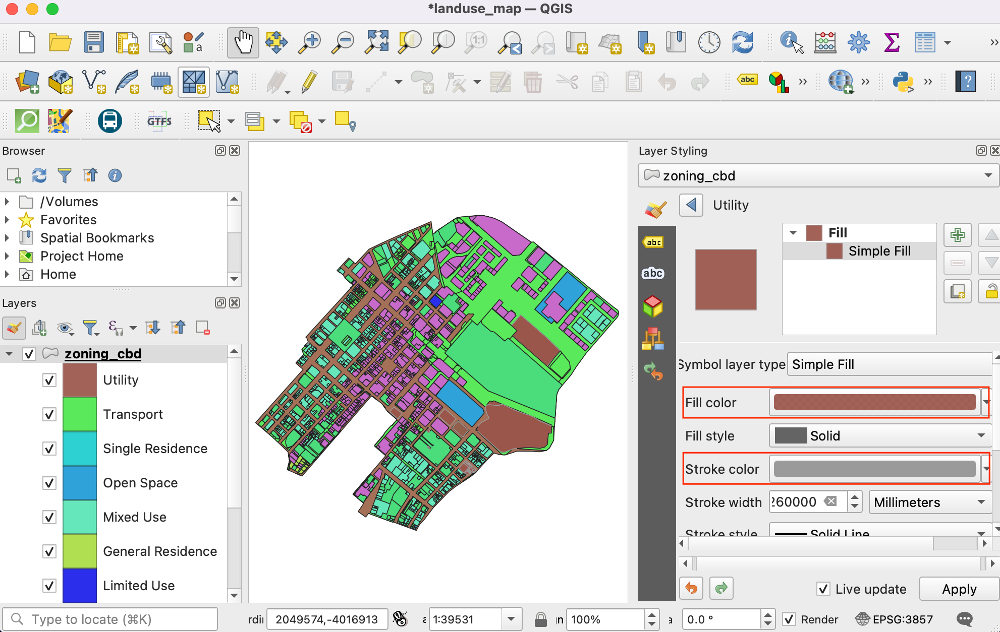Die Prozedur wiederholen wir für jede Kategorie. Die letzte Kategorie ist im Standard
Alle anderen Werte. Sie umfasst alle Grundstücke mit einem NULL-Wert in der SpalteINT_ZONE_C. Das kommt daher, dass diese Grundstücke eine Mehrfachkategorisierung aufweisen. Sie sind im Layersplit_zoning_cbdgesondert ausgewiesen. Im aktuell bearbeiteten Layer werden sie nicht benötigt. Wir wählen dieses Symbol aus und entfernen die Kategorie über den --Button.
Als nächstes wählen wir den Layer
cbd. Wir ändern den Symbollayertyp in Rand: Einfache Linie und erhöhen den Wert für die Strichbreite.
Der Layer
split_zoning_cbdumfasst alle Grundstücke, die im Layer zoning_cbd keine Werte in der SpalteINT_ZONE_Centhalten. Die Struktur der Attributtabelle und die enthaltenen Werte sind dieselben wie im Layerzoning_cbd. Anstatt die Symbole des Layers manuell anzupassen, können wir die Styles per Copy & Paste übertragen. Dazu wählen wir den Layerzoning_cbdund wählen aus dem per Rechtsklick aufgerufenen Kontextmenü .
Anschließend wählen wir den Layer
split_zoning_cbd, rufen per Rechtsklick das Kontextmenü auf und wählen dort .
Dieselben Symbole werden nun den Polygonen des Layers
split_zoning_cbdzugewiesen. Die Stile und damit die Legende sind nun vollständig.
Wir haben nun die Symbole und Beschriftungen der Layer konfiguriert. Nun wollen wir eine Karte erstellen, die neben diesen gestalteten Layern weitere Elemente wie einen Maßstab, einen Nordpfeil oder Beschriftungen enthält. QGIS wird mit einem Drucklayout ausgeliefert, das die Zusammenstellung solcher Karten ermöglicht. Wir wählen dazu . Die angezeigte Aufforderung nach Eingabe eines Namens können wir leer lassen und klicken OK.

Im Fenster Drucklayout wird ein Arbeitsbereich angezeigt. Über einen Rechtsklick auf diesen Bereich können wir Seiteneigenschaften… auswählen.

Wir stellen unter Orientierung
Hochformatein. Als nächstes wählen wir .
Mit gedrückter linker Maustaste ziehen wir im Arbeitsbereich ein Rechteck auf. Dies wird der Rahmen für die Karte, welche die Karte aus dem Hauptfenster von QGIS enthalten wird. Im Bereich Elementeigenschaften benutzen wir das Icon Kartenausdehnung interaktiv bearbeiten, um den Inhalt der Karte über verschieben/zoomen dem Rahmen anzupassen.

Im Bereich Elementeigenschaften scrollen wir nach unten und setzen die Option Rahmen. Diesen Bereich können wir erweitern, um dort eine Farbe für den Rahmen festzulegen. Auch die Dicke des Rahmens kann verändert werden.
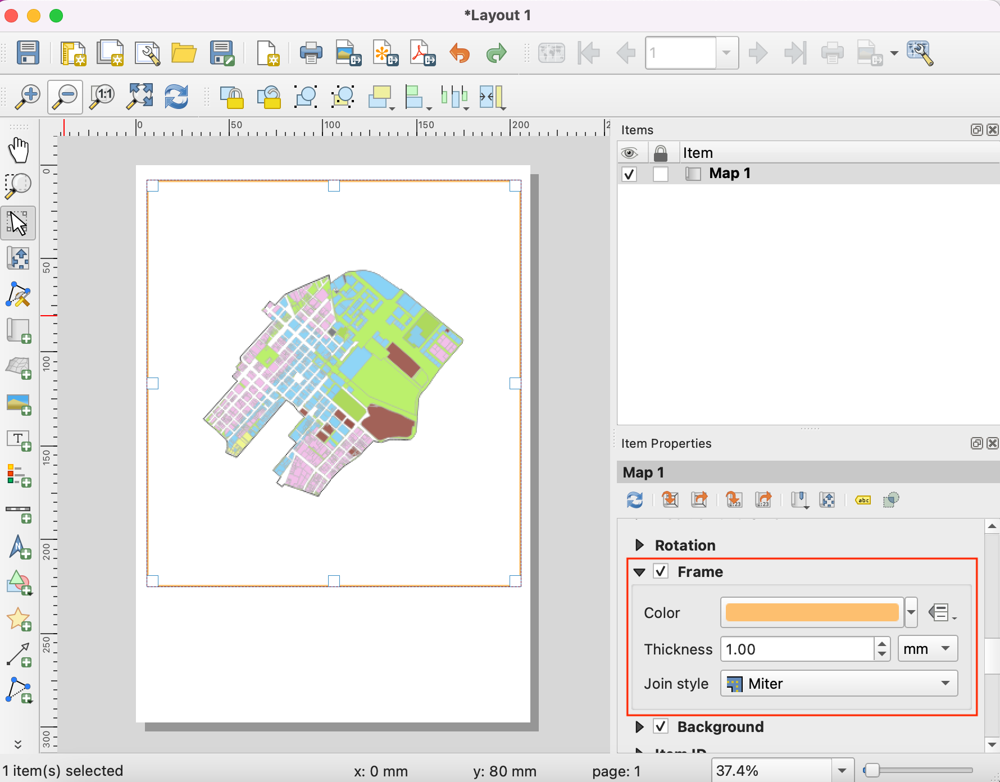Der Rahmen für die Karte ist nun fertig. Wir wollen weitere Elemente darstellen. Dazu wählen wir .

Wir ziehen wiederum mit gedrückter linker Maustaste ein Rechteck an der Stelle auf, an der die Legende angezeigt werden soll. Anschließend scrollen wir im Bereich Elementeigenschaften nach unten zum Bereich Legendenelemente und entfernen die Option Automatisch aktualisieren, sodass wir die Legendenelemente manuell bearbeiten können.

Wir hatten 2 Layer mit identischen Legenden erzeugt, sodass wir einen davon entfernen können. Wir wählen den Layer
split_zoning_cbdund klicken auf das Icon Gewählte Objekte aus der Legende entfernen; ebenso entfernen wir den Layercbdaus der Legende.
Wir klicken mit der rechten Maustaste auf den Layer
zoning_cbdund setzen die Option Versteckt.
Im Bereich Elementeigenschaften scrollen wir weiter nach unten und erweitern den Bereich Spalten. Wir setzen die Option Layer aufteilen und erhöhen den Wert für Anzahl auf 2.

Wir scrollen noch weiter runter bis zum Bereich Zwischenräume, den wir erweitern. Wir passen die Abstände zwischen den Legendenelementen an, bis die beste Lesbarkeit erreicht ist.

Im Bereich Schriftart und Textformatierung können der Stil und die Größe für die in der Legende verwendete Schriftart angepasst werden. Ist dies erledigt, wählen wir . Wir spannen mit gedrückter linker Maustaste ein Rechteck an der Stelle auf, wo der Nordpfeil platziert werden soll.

Wir wählen ein passendes Symbol und scrollen runter, um den Bereich SVG-Parameter zu erweitern. wir ändern die Füllfarbe und die Strichfarbe ganz nach Geschmack.

Nun wollen wir einen Maßstab hinzufügen. Wir wählen dazu . An der Stelle, an welcher der Maßstab angezeigt werden soll, ziehen wir ein Rechteck auf. Die Parameter Stil und Segmente für den Maßstab passen wir an.

Unsere Karte benötigt noch einen Titel und weitere Beschriftungen zur Information. Wir wählen dazu .
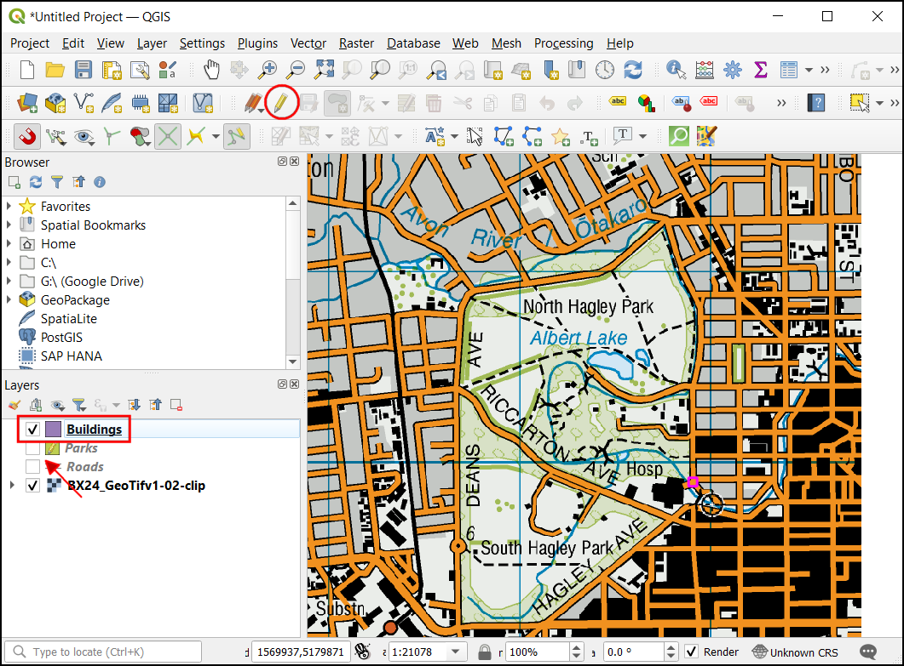Das Beschriftungsfeld wird wiederum mit gedrückter linker Maustaste aufgezogen. Im Bereich Haupteigenschaften geben wir einen passenden Titel ein. Um die Schriftgröße einzustellen, können wir auf den Button Schriftart klicken und die Schriftgröße und den Stil einstellen.
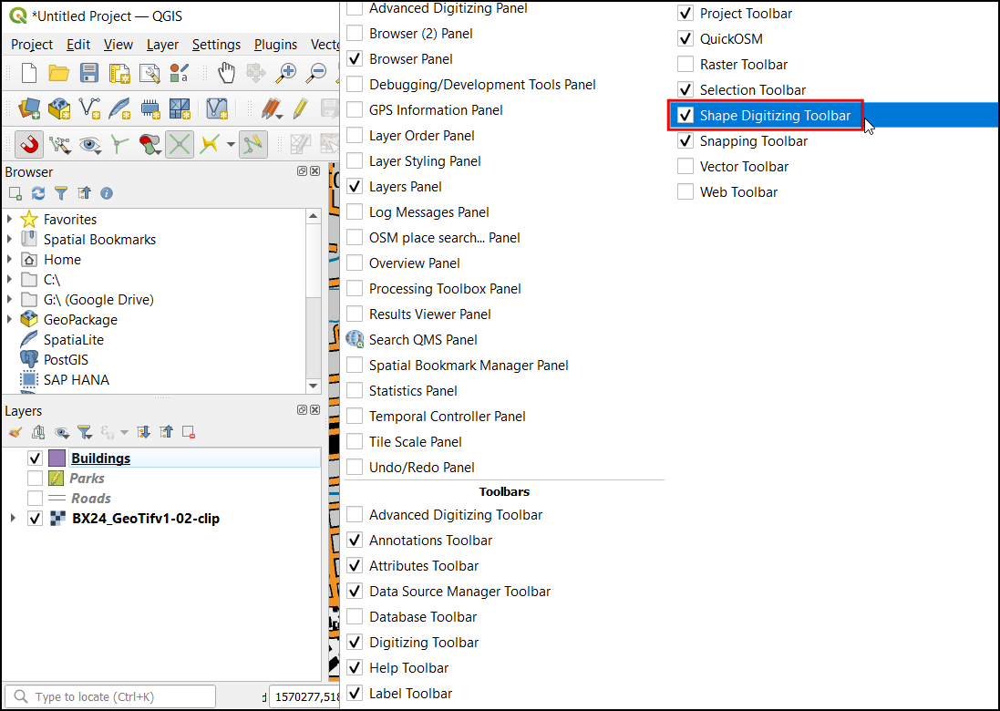Weitere Beschriftungen können z. B. die Datenquelle oder den Autorennamen enthalten. Zuletzt werden wir unsere Karte fertigstellen, indem wir einen Rahmen um die Beschriftungen hinzufügen. Wir wählen dazu .
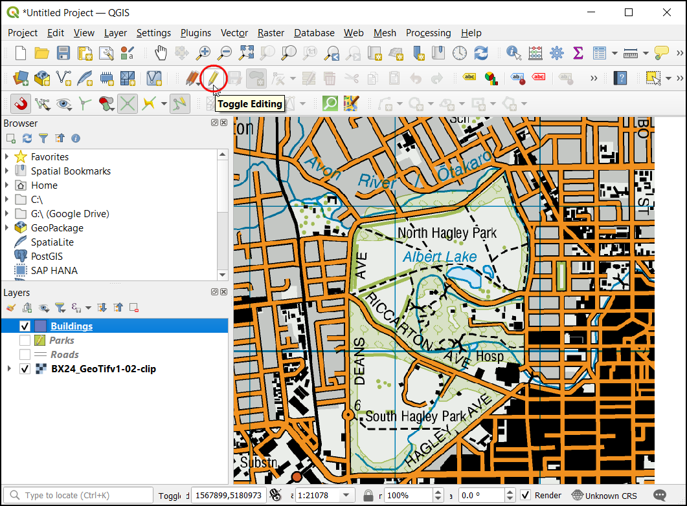Wir ziehen wieder ein Rechteck in der gewünschten Größe auf und klicken auf Stil. Wir setzen die Füllfarbe aus
transparentund die Strichfarbe so, dass sie zu den anderen Rahmenfarben passt.Sobald das Arrangement unsere Erwartungen erfüllt, kann das Ergebnis exportiert werden. Wir wählen . Das Dokument kann in unserem Daten-Ordner als
capetown_zoning_map.pdfgespeichert werden.
If you want to give feedback or share your experience with this tutorial, please comment below. (requires GitHub account)